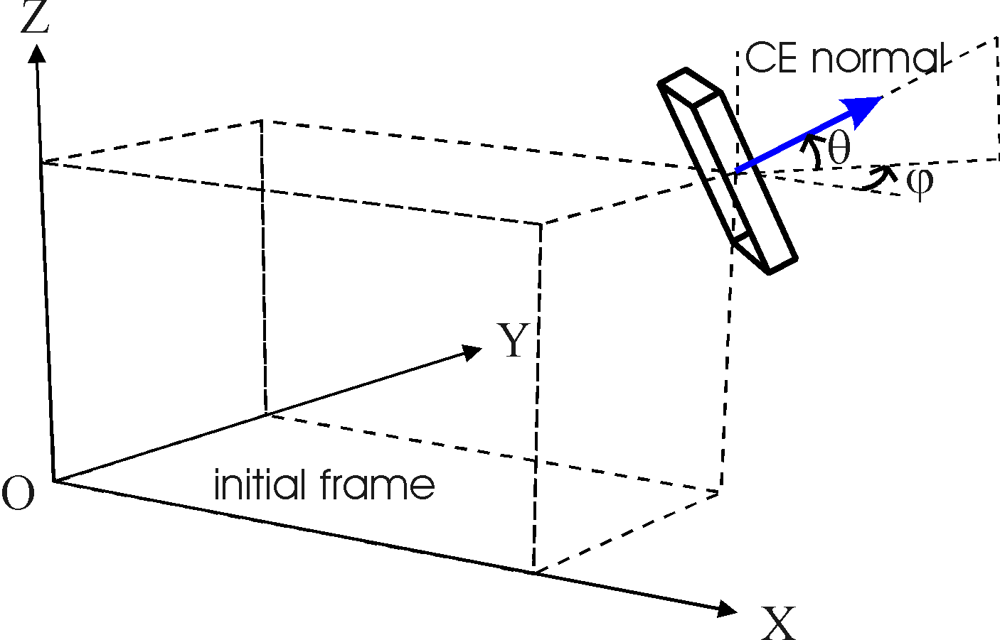
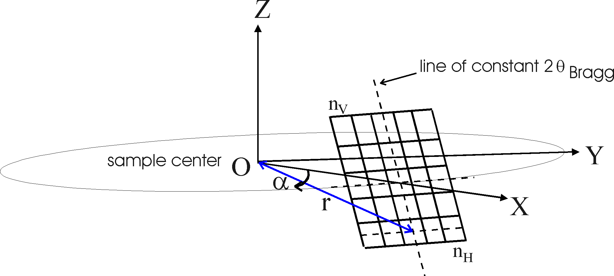
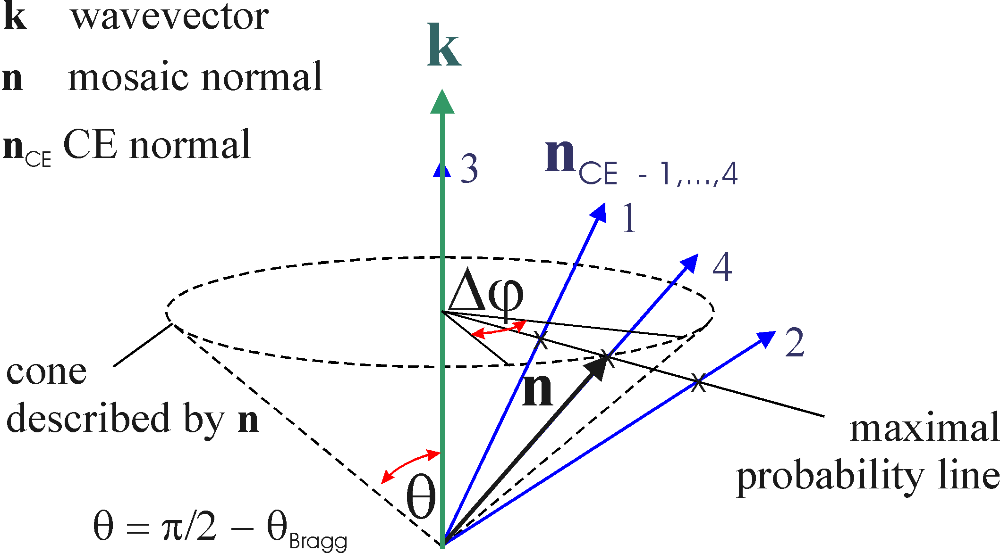

The reflecting surfaces in the CE can be offcut. Thus the CE-s are generally not (h,k,l) oriented i.e. they are not parallel to the reflecting planes. The Bragg angle can be set only as a central parameter. For spacial focusing (focusing options) it is more useful to have (h,k,l) crystal planes . The users have to define the orientation of the CE (Fig. CE) and, independently, the orientation of the reflecting planes which determine the Bragg conditions. The crystal structure can be characterized by setting the parameters d-spacing, d-spread (Lorentzian and Gaussian), mosaicity and reflectivity. The geometrical parameters of the CE are: position, horizontal and vertical offset angles (conforming to Eulerian rotation), horizontal and vertical 'Bragg angles' (offcut crystal) with reference to the final coordinate system of the antecedent module, and size of the CE.
Detailed parameter definitions can be read from the tables in section B. The functions used to approximate probability distributions are given in section C.
No transmission and multiple Bragg reflections are computed. In the output frame X'Y'Z', all neutron coordinates are referring to the moment when the neutrons are just reflected from the crystal taking the new directions and probability weights.
Fig. CE

A. Options
For flat crystal simulation it is enough to use one single CE. The simulation of a curved focussing surface works with a matrix of CE-s (as they are really constructed), therefore one needs all positions, orientations and size parameters. For convenience, the deviations relative to the corresponding main values given in the Parameter File have to be defined and read from a Focus File properly formatted.
The options are:
| 1. Crystal_flat: | Simulates a flat rectangular generally (h,k,l) oriented offcut crystal. | -O1 |
| 2. Crystal_focus: | Activates the Focus File generation for a) l-focussing, b) spherical c) vertically focussing cylinder or d) double focussing cylinder M/A geometry. | -O2 |
| 3. Crystal_focus_dat: | Uses optional Focus File independently generated by separate programs not included in this module. | -O3 |
Option 2 takes advantage of an internal code of the module, which automatically generates the Focus File for a) l-focussing, b) spherical c) vertical cylinder d) or double focussing M/A geometry. This option is suitable, for example, for setting analysers in a near-backscattering geometry to provide for example constant wavelength selection for neutrons scattered from the center of the sample (Fig. l-focussing).
Fig. l-focussing

B. Parameter and file descriptions
Option Crystal_Flat
| File | Format | Examples Attached | Command Option |
| Parameter File | Includes FILE INPUT PARAMETERS. This file can be read or created/modified by the VITESS shell. Values are read from separate rows i.e. 1 value/row for scalar and 3 values/row for vector type variables. | crys.par | -P |
- MAIN PARAMETERS
| Parameter | Physical Symbol, Description | Range, Examples | Command Option |
| mosaic fwhm horizontal, vertical
[deg] |
hY
,hZ
Horizontal and vertical fwhm components of the 2-dimensional Gaussian mosaic distribution. If it is set smaller than 0.001, then this minimum value is set automatically. |
PG(002): 0.2 0.8 deg
General: 0.001 1deg |
-m, -M |
| d-spread
[-] |
Dd / d
Fwhm of the d-spacing distribution function (Lorentzian and Gaussian options) divided by lattice parameter under consideration. It is zero for a perfect crystal. |
PG(002): 0.2 -
2´ 10-3
Si(111): 0.1 - 2´ 10-4 |
-D |
| d-distribution | Lorentzian (1), Gaussian (2) (see C. Distribution functions used ) |
1, 2 | -d |
| reflectivity normalization
[-] |
R
By this variable the peak reflectivity R may be renormalized from the default value. For a zero mosaic range factor (see below) this reflectivity parameter coincides with the peak reflectivity of a crystal, however, for a real case this is not zero and one needs to calibrate the reflectivity (see E. Intensity normalization) |
1 (default) | -R |
| repetition rate
[-] |
If this integer > 1, the neutron is used multiple times for better statistics. | >= 1 | -A |
- FILE INPUT PARAMETERS
| Parameter | Physical Symbol, Description | Range, Examples |
| d-spacing
[Å] |
d
Lattice parameter corresponding to a reflection from a (h,k,l) crystal plane |
PG(002): 3.332 Å
Si(111): 3.135 Å Ge(113): 1.703 Å Cu(220): 1.272 Å |
| mosaic range factor
[-] |
Fmosaic
Sets the randomly covered angular range (Dj) on the cone (see Fig. Cone) described by the mosaic normal vector, the axis being the wavevector of the neutron. By definition: Dj= Fmosaic ´ Min(hY ,hZ). The centre of the angular range is defined by the mosaic orientation of maximal probability. |
Fmosaic minimum:
0, Fmosaic maximum: 360/ Min(hY , hZ). |
| d-range factor
[-] |
Fd-spacing
Sets the range randomly covered by the lattice parameter in Dd units: Range = Fd-spacing ´Dd (see definition of d-spread). |
10 50 |
| order of reflection
[-] |
N
Conforming to Braggs Law: N l = 2 d sinqBragg |
1, 2, ... |
| main position
[cm] |
x, y, z
Generally this position defines the reference point (origin) of the M/A system in the frame provided by the former module(or according to an input data file): the position of each single CE is defined by (x,y,z)+deviation from (x,y,z) the deviation is read from focus data file. For theFlat Geometry option (x,y,z) is simply the center position of the rectangular CE. |
X = distance to CE
Y = Z = 0.0
|
| thickness, width, height of CE
[cm] |
t, w, h
Thickness, width and height give depth, horizontal and vertical dimensions of the rectangular CE. For each single CE the dimensions will be (t,w,h)+deviation from (t,w,h) the last being read from focus data file. |
t = 0.0 0.5 cm
w = h = 0.5 20 cm
|
| main 'surface offset' angle horizontal, vertical
[deg] |
f, q Euler angles
If f = q = 0.0 (exact backscattering), the normal vector of CE is parallel to the positive X axis direction. A rotation first around the Z axis (f ) and then around the (new)Y axis (q ) gives a proper orientation of the CE. The orientation of each single CE will be (f, q) +deviation from (f, q) the last being read from focus data file. |
f = q = 0.0 exact backscattering;
f = 0.0, q = 0 ... 90 deg;
|
| main 'Bragg offset' angle horizontal, vertical [deg] |
Same as 'main offset angle' above if the (h,k,l) planes are parallel to the crystal plane as it has sense for the focusing geometry options. In case of flat crystal option, the reflection planes can be set non-parallel to the crystal surface. | see one before |
| output angle horizontal, vertical
[deg] |
F, Q
In case of "user defined output frame", a Frotation about the Z axis and then a Qrotation about the (new)Y axis defines a new reference orientation. According to this and the output frame translation vector (see below) the neutrons are written to the output file. If "standard frame generation" is activated, the output frame is rotated until the new X axis is parallel to the "reflected" original input X axis corresponding to the main offset values. |
F = 180
deg, Q= 0.0 exact backscattering;
F = 180 deg, Q= - 2q, if qis the main vertical offset angle and j= 0.0 |
| output frame
[cm] |
x, y, z
The position of the output frame origin (O) in the original frame. (x, y, z) represents the translation vector applied to shift the origin of the original (input) frame (O) to the new (output) position. Default setting is: (x, y, z) = (x, y, z) i.e. main position of the M/A system. |
x, y, z one point on the reflected beam axis |
Option Crystal_Focus
- same as Option Crystal_flat
-FOCUS PARAMETERS
| Parameter | Physical Symbol, Description | Range, Examples | Command Option |
| number of CE
horizontal, vertical [-] |
The number of columns and rows (nH, nV) of the created CE-matrix. | 2 50 | -H,-V |
| radius
[cm] |
Distance from the sample center to the bottom row of the CE-matrix (see figure l-focussing). | 200 cm | -r |
| radius horiz.
[cm] |
Radius of focussing in horizontal direction for a double focussing shape. | 200 cm, 0 cm to focus only vertically |
-s |
| angle vertical
[deg] |
Angular offset of the bottom row of the CE-matrix relative to the horizontal plane containing the sample center (see figure l-focussing). | -3 deg | -a |
| focusing option: 1 constant lambda 2 spherical 3 vert. cylinder 4 double focussing |
Here one can choose the focusing geometry.
The 'double focussing' option assumes a flat geometry, in which each element is rotated to give cylindrical focussing with different radii in vert. and hor. direction. The 'vert. cylinder' option really forms a vertically focussing cylinder. |
1, 2, 3, 4 | -g |
- description of the focus file (filename must
be given as input):
| File | Format | Examples Attached | Command Option |
| focus file | First row includes 2 integer numbers: nH,
nV, the number of columns and rows of the created CE-matrix. (H
= horizontal, V = vertical.)
Next nH´ nV rows are created by two program loops (internal loop: V) computing 8 values representing deviations from the main values for each single CE . These are interpreted by the module Crystal as follows: The position of each single CE is (x,y,z)+deviation from (x,y,z) as read from columns 1-3. The dimensions of each single CE are (t,w,h)+deviation from (t,w,h) as read from columns 4-6. The orientation of each single CE is (j , q) + deviation from (j , q) as read from columns 7, 8. |
lamb_foc.dat, | -G |
Option Crystal_focus_dat
- focus file (as described above) which has to be given externally, focus file name should be give as input.
1) 2-dimensional Gaussian mosaic distribution:
y , xare the angular coordinates of the mosaic normal vector in the frame of the CE,
sY,Z = hY,Z / (8ln2)1/2 are the Gaussian standard deviations and hY,Z = fwhmY,Z .
PMax = P(0,0)=1.
d0 is the d-spacing most probable and Dd = fwhm.
PMax = P(d0)=1.
d0 is the d-spacing most probable and Dd = fwhm.
PMax = P(d0)=1.
In a first step, the CE hit by the neutron in the CE-matrix is searched. The neutron finds one mosaic piece of random d-spacing on which it is reflected. All possible orientations of the mosaic piece normals (determined by wavelength and d-spacing conform to Braggs Law) describe a cone with an opening q= pi/2 - qBragg , the actual axis being the initial wavevector of the neutron under consideration. In Fig. Cone the mosaic piece normal vector is labelled by n and the normal vector of the CE by nCE. The figure shows the wavevector k as fixed (in theframe of the neutron), that is, the individual neutrons see the CE-s (nCE-s) oriented in various directions labelled1, ..., 4.1 corresponds to the case when nCE is inside the cone and2 when outside,3 when nCE || k and4 when nCE || n. The most probable mosaic orientation is when k, n and nCE are co-planar vectors i.e. cross themaximal probability line defined by the cross-points with the flat base of the cone. In this case the angle between n and nCE is minimal. For larger angles the probability decreases very rapidly as a function of the fwhm of the 2-dimensional mosaic spread. Consequently it is more economical to take a random orientation for the mosaic piece (Dj), which is close to themaximal probability line. Djmust be large enough to cover the Gaussian distribution in the whole range. In the extrem case3, must be set Dj= 2p (even if the mosaicity is very small in one of the directions, because of the computing algorithm). In case4 Dj= 0 yields P = PMax = Reflectivity.
In the output, the new probability weight of a neutron mirrors adequately the d- and mosaic distributions of the CE-s. The new coordinates of the neutron are computed consecutively by taking into account the exact orientation of the reflecting mosaic piece.
Fig. Cone

E. Intensity normalization
The sophisticated computation procedures of this module (e.g. considering a 2-dim. distribution function for the mosaicity) leads to a very good description of the factors which influence the resolution behavior of the whole instrument.
For reliable intensity comparisons (to other types of instruments) it might be necessary to renormalize the calculation. The following procedure is recommended:
Last modified: Thu Jan 29 15:07:09 MET 2004, G. Zs.